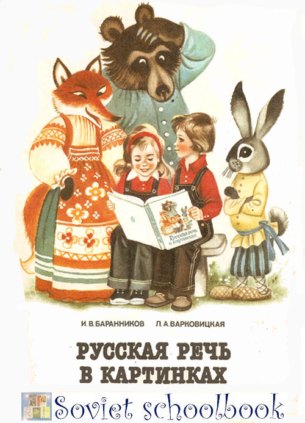
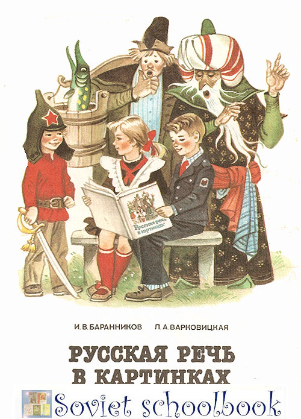

Паблик ВКонтакте
Ссылки для скачивания
Русская речь в картинках


НАЧИНАЕМ ГОВОРИТЬ
Школа
Дом. Семья
Дом и двор
Одежда
Береги здоровье
Домашние животные
Домашние птицы
Овощи
Фрукты и цветы
Звери
Зимой
Летом
Октябрята
ГОВОРИМ, ЧИТАЕМ, ПИШЕМ
Игры
В классе
Семья
На ферме
В поле
В колхозном саду
На школьном огороде
В лесу
Дикие звери
Птицы
Рыбы
Зима
Весна
Лето
Осень
Город
ПРАВИЛЬНО ПРОИЗНОСИТЕ ЗВУКИ
Различайте Б и В
Различайте П и Ф
Различайте К и Х
Различайте Ш и Щ
Различайте Ш и Ч
Различайте ТЬ и Ч
Различайте Ш, Ч и Щ
Различайте С и Ц
Различайте Д и Т
Различайте З и С
Различайте твёрдые и мягкие звуки
Различайте Л и ЛЬ
Произносите правильно стечение согласных звуков
Произносите правильно предлог со следующим словом
Приложение 1. Слова, тексты и предложения курса
Приложение 2. Словарь
Приложение 3. Перечень грамматических тем
Приложение 4. Трудные для нерусских учащихся звуки
Лето
Пионеры
Физкультура и спорт
Осень
Школа
Великая Октябрьская социалистическая революция
Зима
В доме
Магазин
Забота о малышах
День рождения
Лечение болезней
Почему заболели ребята
По воздуху, по земле, по воде
Стройка
Город
Слава армии родной
Хлеб
Домашние животные
Лес - наше богатство
Наша страна
К звёздам
Пионеры - юные ленинцы
ВЕСЁЛЫЕ КАРТИНКИ
Приложение 1. Словарь
Приложение 2. Перечень грамматических тем
Внимание! Материалы данного ресурса не предназначены для коммерческого использования *** NB! Not for commercial distribution
Составитель и разработчик публикаций:*** Content editor and publisher:
© wkola.su 2020г.